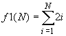

|
|
| Actividad:
Tarea
sobre el ciclo while. Unidad: Estatutos de repetición. |
|
| Descripción | |
 |
|
| Modalidad | |
 |
|
| Objetivos de la actividad | |
 |
|
| Instrucciones | |
 |
Forma de trabajo:
Utiliza el siguiente
esquema como apoyo para desarrollar tus soluciones:
 Ejercicio
1
Desarrolla un programa en C, que incluya las siguientes funciones: La función f1 que recibe un valor entero mayor o igual a uno; y utilizando un ciclo for regresa el resultado de la siguiente sumatoria: 
Por ejemplo: f1(3) = 2(1) + 2(2) + 2(3) = 12 f1(6) = 2(1) + 2(2) + 2(3) + 2(4) + 2(5) + 2(6) = 42 La función f2 que recibe un valor entero mayor o igual a uno; y utilizando un ciclo for regresa el resultado de la siguiente multiplicatoria:  Por ejemplo: f2(2) = (3(1)-1)*(3(2)-1) = 10 f2(4) = (3(1)-1)*(3(2)-1)*(3(3)-1)*(3(4)-1)= 880 La función f3 que recibe un valor entero mayor o igual a uno; y utilizando un ciclo for regresa el resultado de la siguiente serie: f3 ( n ) = - 1 + 2 - 3 + 4 -
5 + ... n
Por ejemplo: f3( 1 ) = -1 f3( 2 ) = -1 + 2 = 1 f3( 3 ) = -1 + 2 - 3 = -2 f3( 4 ) = -1 + 2 - 3 + 4 = 2 El procedimiento f4 que recibe 2 parámetros reales, el limite superior de la serie LS y el limite inferior de la serie LI .Y utilizando un ciclo for, el procedimiento deberá desplegar en pantalla la secuencia de números desde LS hasta el LI en decrementos de 0.4. Por ejemplo: f4(5.0,3.0), desplegará en pantalla: 5.0, 4.6, 4.2, 3.8, 3.4, 3.0 f4(7.3,3.1), desplegará en pantalla: 7.3, 6.9, 6.5 ........ 3.7, 3.3 El procedimiento imprime_6_cada_vez( ), que utilizando un do-while, desplegará en pantalla 6 números consecutivos. Cada 6 números el procedimiento deberá preguntar al usuario si desea continuar, de ser así seguirá con la impresión de la secuencia de números siguientes en pantalla; en caso contrario termina el procedimiento.Por ejemplo: imprime_6_cada_vez(); desplegará en pantalla lo siguiente: 1 2 3 4 5 6 Desea continuar (S/N): S 7 8 9 10 11 12 Desea continuar (S/N): S 13 14 15 16 17 18 Desea continuar (S/N): N Fin del procedimiento.... En el main() construye un menú que muestre las siguientes opciones: MENú A. Sumatoria B. Multiplicatoria C. Serie Alterna D. Serie en decremento E. Imprime 6 cada vez S. Salir Opción? Utiliza un ciclo do-while para desplegar el menú en pantalla hasta que el usuario seleccione la opción de Salir. Recuerda que la captura de datos y validación de valores debe ser realizada en el main(), pues las funciones NO pueden realizar las tareas de validación o captura de datos. Nota que las opciones del menú son alfabéticas y el usuario podrá seleccionar la opción del menú presionando la letra mayúscula o minúscula correspondiente. Incluye el algoritmo como comentario al inicio del programa. |
| Recursos | |
 |
|
| Especificaciones de entrega | |
 |
|
 |
|
| DR© Tecnológico de Monterrey Campus Querétaro| Departamento de Desarrollo Académico| México, 2012 | |